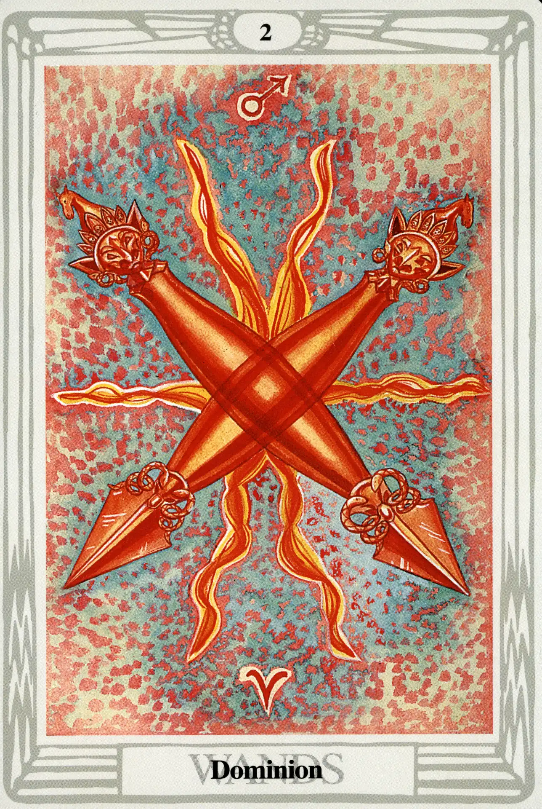

Wands
Two of Wands
Dominion

(Mars in Aries)
0° to 10° Aries
March 21 to March 30
Original Title: Lord of Dominion.
Golden Dawn Model: A hand appears from clouds and grasps two crossed wands. Flames appear where wands meet.
King Scale for Chokmah: Pure soft Blue.
The Four Scales for Mars: Scarlet; Red; Venetian Red; Bright Red, rayed Azure or Emerald.
The Four Scales for Aries: Scarlet; Red; Brilliant Flame; Glowing Red.
Formula: 2 (Chokmah) of Wands (Atziluth) + Mars in Aries = DOMINION
Following the basic Mathers design, the Two of Wands exhibits a textbook use of the color scale—the reds of Aries upon an explosive background of martial reds, azure, and emerald. The colors inform us in no uncertain terms that Mars is very happy in Aries and that Aries is happy to play host to Mars.
Crowley oberves that this strong astrological marriage in Chokmah (where the elements first manifest) makes the Two of Wands “fire in its best and highest form” and represents what he calls “Will in its most exalted form…ideal Will, independent of any given object.”
The Wands are demon-headed Tibetan Dorjes.” Like the thunderbolt of Zeus, the Dorje represents the directed power of the gods, and serves as the instrument of divine destruction that must, of necessity, precede the creative cycle. “The virgin ovum,” Crowley claims, “must be broken in order to fertilize it.” The six flames bursting behind the Dorjes allude to the Sun, which is exalted in Aries and very happy to be there.